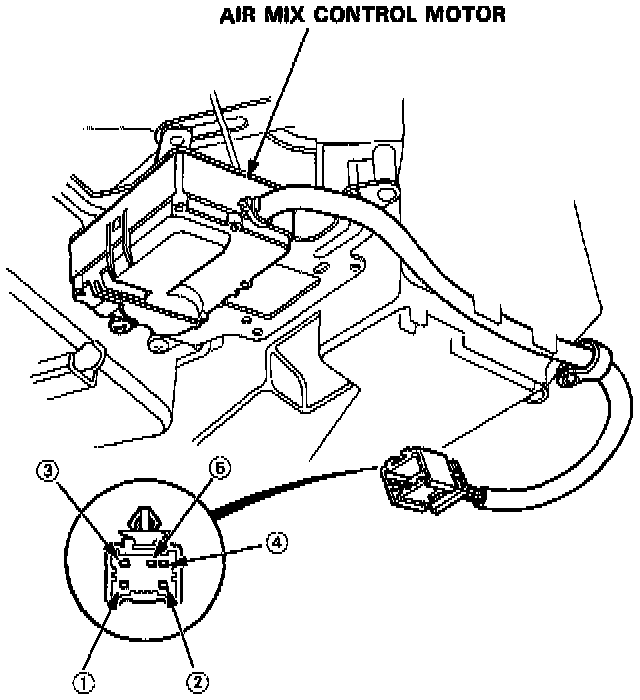

Component Test

1. Measure the resistance between the No. 3 and 5 terminals.
Resistance: approx. 6 K Ohms
2. Check the motor operation by briefly connecting the battery power to the No. 2 terminal and grounding to the No. 1 terminal.
3. Reverse the wires to be sure the motor will run in both directions.
CAUTION: Be sure to disconnect power from the motor as soon as the motor has started. Failure to do so will damage the motor.
4. While repeating step 2, measure the resistance between the terminals No. 4 and No. 5. Resistance should be approximately approx. 1.2 K Ohms at COOL and approx. 4.8 K Ohms at HOT. Also check the resistances with the battery polarity reversed.